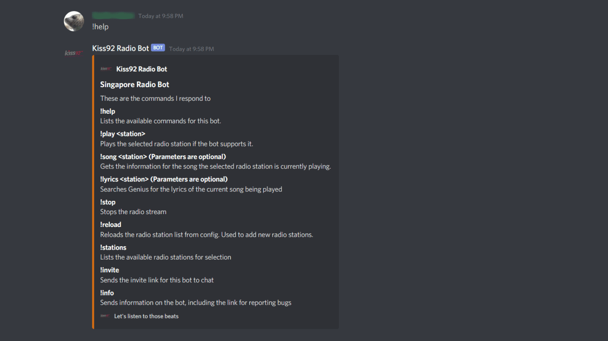
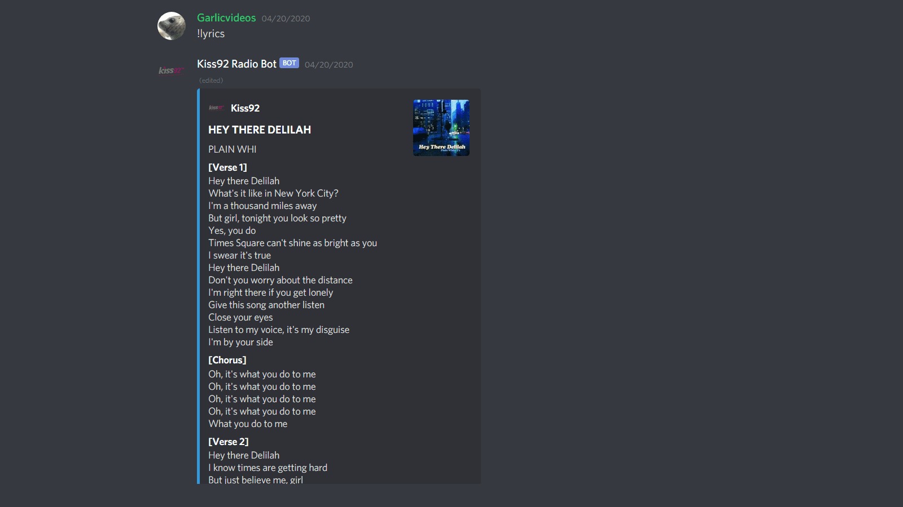
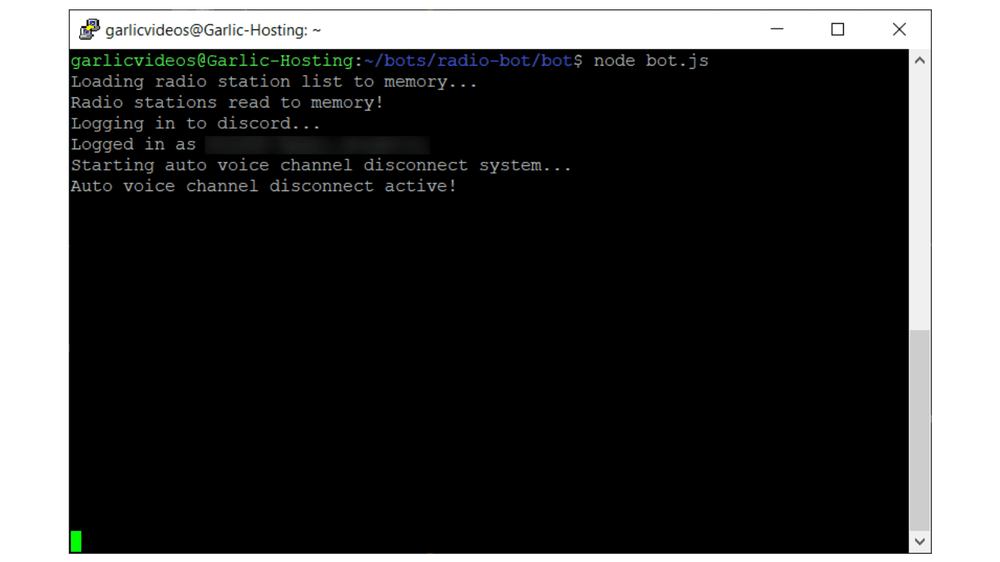

Xavier's Portfolio
Introduction
Background
Showcase



Previous
Next
Discord Radio Bot is a bot that relays radio feed from Singapore's Radio Stations into Discord voice channels, which allows multiple people to listen to synchronised audio from the Radio Station. It includes a bunch of features as well, such as song info, lyrics, and more! This was created as my friends and I enjoyed listening to Kiss92, but our audio never syncs because of how HTML 5 audio streams work.
View this project on github
Technologies used
Node.JS
Node.JS is what the bot runs on. It controls everything, from the downloading of posts from reddit to the uploading of them on Instagram.
Discord.JS
Discord.JS is used to perform actions within discord as a bot. It is used to login to Discord, join voice channels, send and read messages, and a whole lot more!
Genius-lyrics-api
Genius-lyrics-api is used to interact with Genius's API. It is used to retrieve information such as song lyrics and the song's album.
Highlights
Never get bored
With support for 5 radio stations (and counting), you can listen to radio feed from multiple langauges and genres! You can add custom radio stations too.
Detailed song info
The bot grabs information on the current song through SPH Radio's API. Information such as song name, artist, start time and end time are available.
Genius Lyrics Support
Lyrics and the album art for the currently playing song is available. It is retrieved from Genius's API.